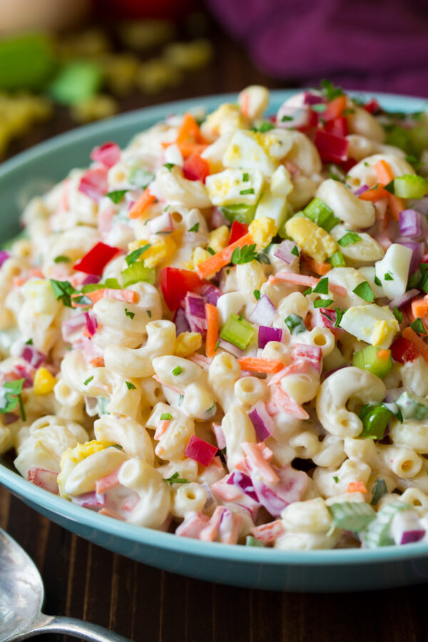

Macaroni Salad

Description
This is a classic, tasty, and oh-so easy macaroni salad recipe! Made with classic ingredient staples including celery,
red pepper, and onion and dressed up in a simple creamy mayo-based dressing, this is guaranteed to be a hit at every cookout and potluck this year!
Ingredients
- 3 cups elbow macaroni
- 1 1/2 cups mayonnaise
- 1/3 large onion, minced
- 1/4 cup chopped fresh parsley
- 2 tablespoons prepared yellow mustard
- 2 teaspoons rice vinegar
- 1 teaspoon white sugar, or more to taste
- 3/4 teaspoon celery seed
- 1/2 teaspoon salt
- 3 hard-cooked eggs, chopped
Steps
- Bring a large pot of lightly salted water to a boil. Cook macaroni in the boiling water, stirring occasionally until cooked through but firm to the bite, about 8 minutes. Drain.
- Rinse macaroni in cold water until cool; drain.
- Stir mayonnaise, onion, parsley, mustard, rice vinegar, sugar, celery seed, and salt together in a bowl. Add macaroni and eggs and stir to coat.
- Chill in the refrigerator for 30 minutes before serving.